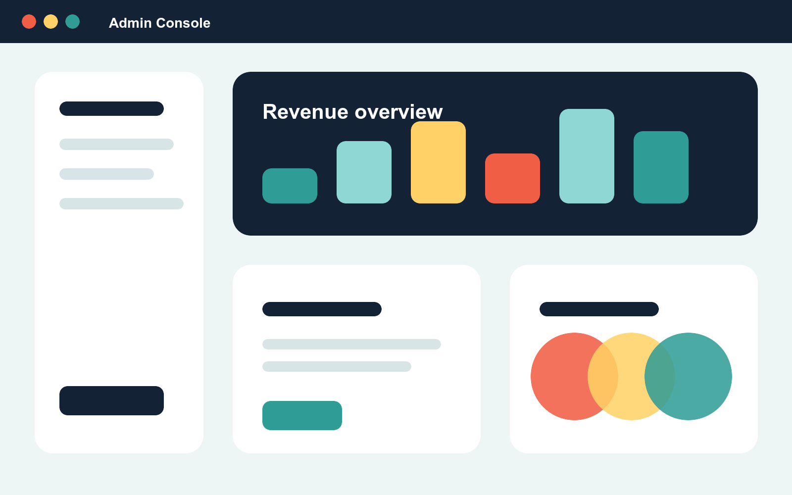
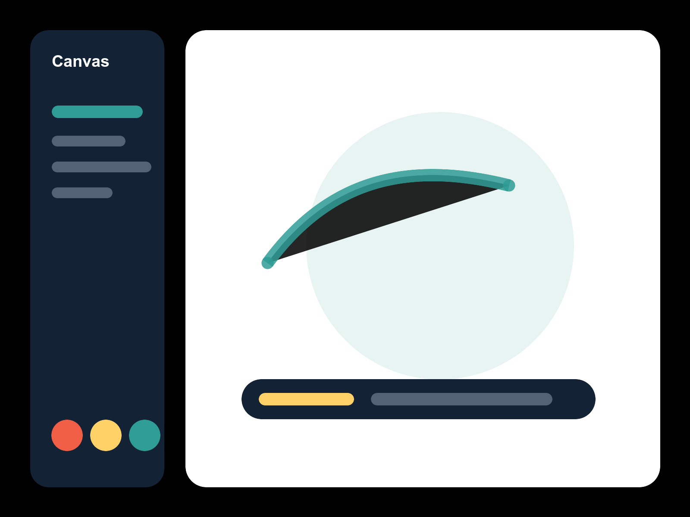
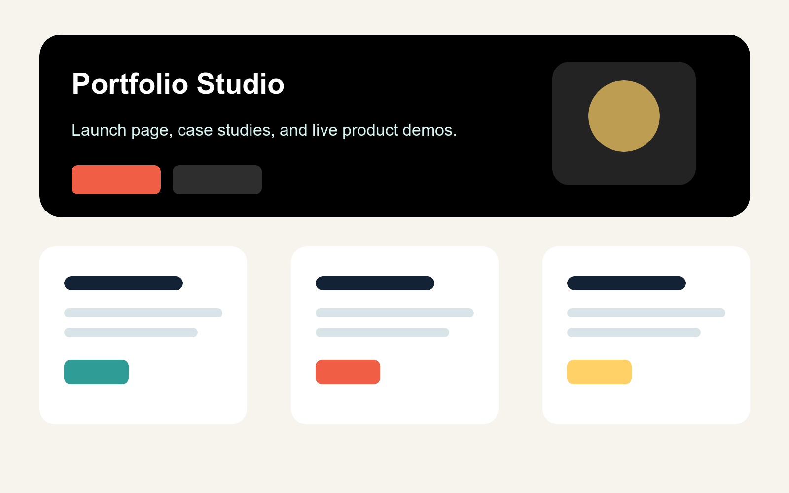
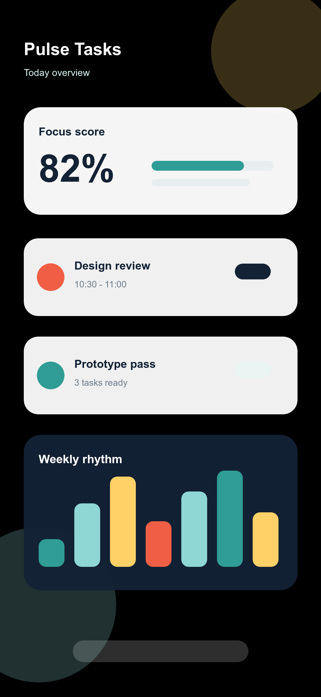

Screenshot Presentation Library
ViewportFrames.css
スクリーンショットを、ただの画像ではなく、作品として見せる。
iPhone、iPad、MacBook、ブラウザ、浮遊スクリーン風のフレームをCSSだけで追加できます。 ポートフォリオやLP、作品紹介ページで、画面の見せ方を一段引き上げます。


Before / After
スクショの印象を一瞬で変える
左は素の画像、右は同じ画像をiPhoneフレームに入れた例です。
Before
After
iPhone
アプリ画面を端末らしく
.vf-iphone はDynamic Island風パーツ、深い影、画面クリップを備えた縦長フレームです。
.vf-landscape や .vf-notch にも対応します。
iPad
横長UIや資料もきれいに
.vf-ipad はダッシュボード、ペイントアプリ、資料画面などを見せやすい横向きベースのフレームです。

Browser Window
Webサービスをブラウザ風に
data-title と data-url を指定すると、CSSの疑似要素でタブ名とURLバーを表示します。

MacBook
管理画面やLPをプロダクトらしく
.vf-macbook は画面、黒いベゼル、下部の土台をCSSだけで表現します。
Floating Screen
作品サイト向けの浮遊スクリーン
.vf-floating に .vf-glow と .vf-float を足すと、画面だけが浮いているような見せ方になります。
Showcase
複数端末を組み合わせる
アプリとWeb管理画面のように、複数の画面をひとつの見せ場として配置できます。


Scroll
フレーム内だけスクロール
.vf-scroll と .vf-screen-content を使うと、端末フレームを固定したまま中身だけスクロールできます。
Usage
短いHTMLで使える
画像、動画、iframe、任意のHTMLコンテンツをフレーム内に配置できます。
Installation
<link rel="stylesheet" href="viewport-frames.css">Image
<div class="vf-iphone">
<img src="screenshot.png" alt="アプリ画面">
</div>Video
<div class="vf-browser" data-title="Video Demo" data-url="https://example.com/demo">
<video src="demo.mp4" autoplay muted loop playsinline></video>
</div>Customize
クラスとCSS変数
色、影、角丸、サイズ、傾き、アニメーション速度をCSS変数で調整できます。
Frames
.vf-iphoneiPhone.vf-ipadiPad.vf-macbookMacBook.vf-browserBrowser.vf-floatingFloating
Effects
.vf-floatFloat.vf-glowGlow.vf-tilt-leftTilt.vf-scrollScroll.vf-no-shadowNo shadow
Colors
.vf-blackBlack.vf-naturalNatural.vf-silverSilver.vf-blueBlue.vf-orangeOrange
<div class="vf-iphone vf-natural" style="--vf-width: 300px;">
<img src="screenshot.png" alt="アプリ画面">
</div>